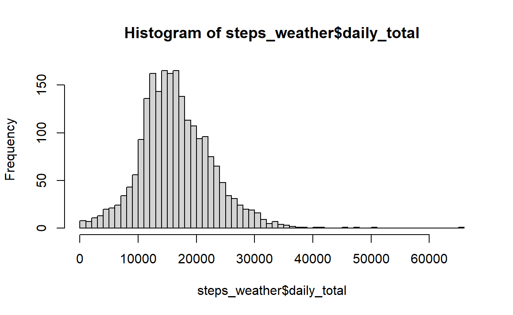
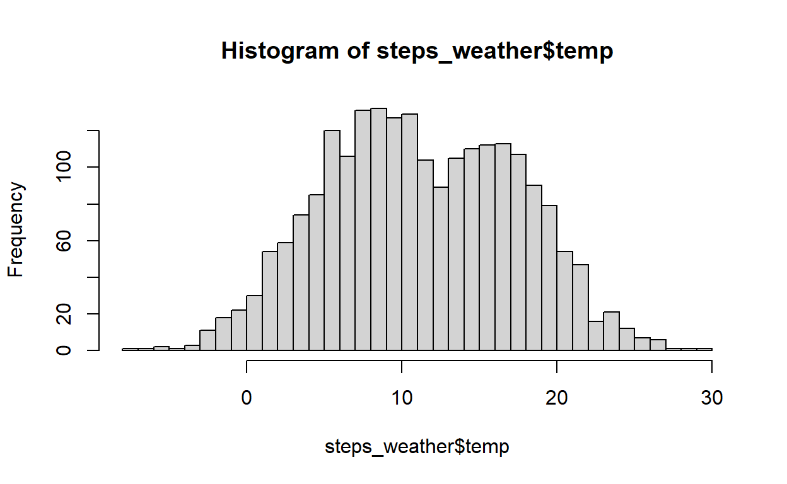
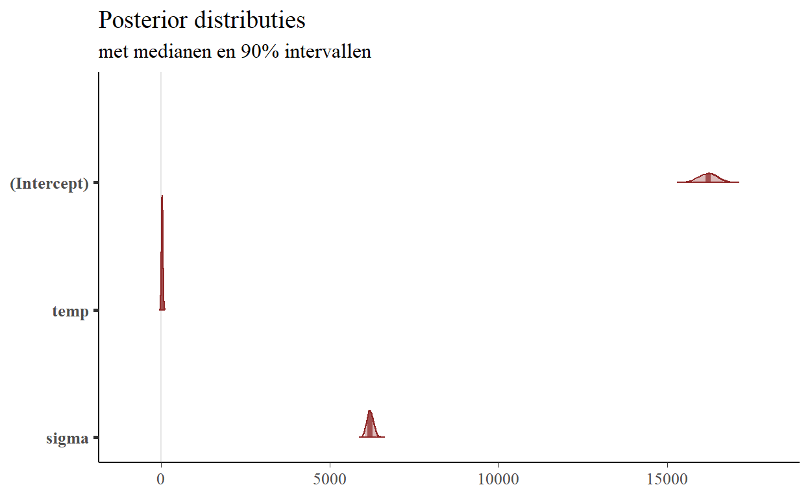
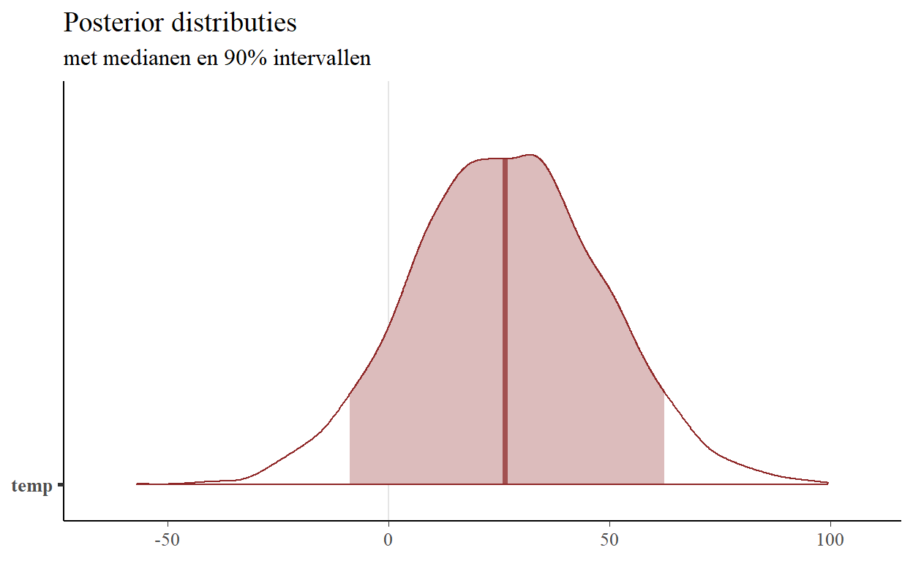
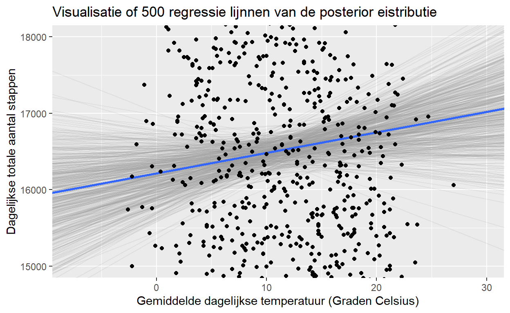
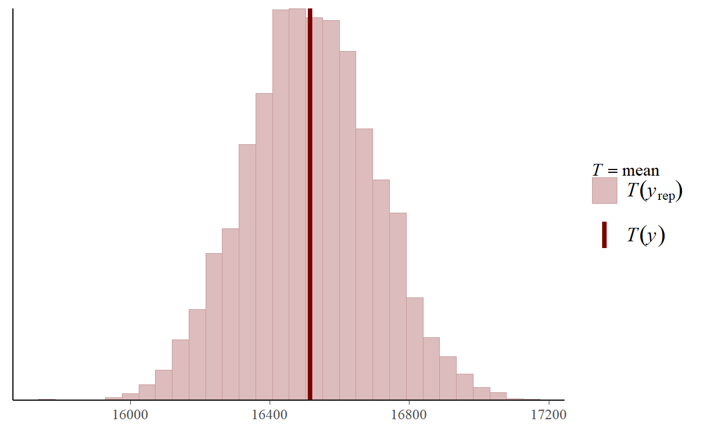
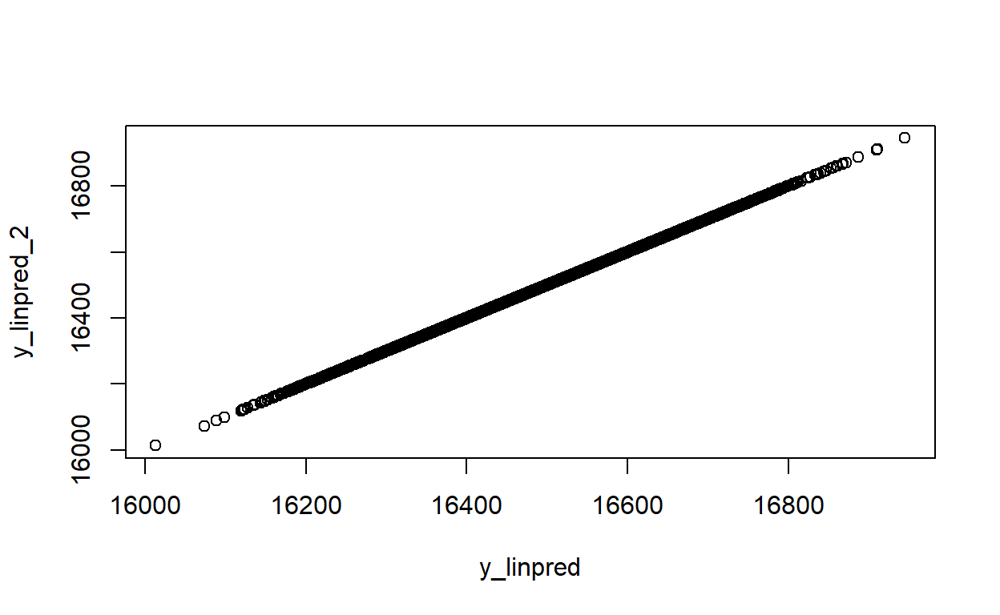
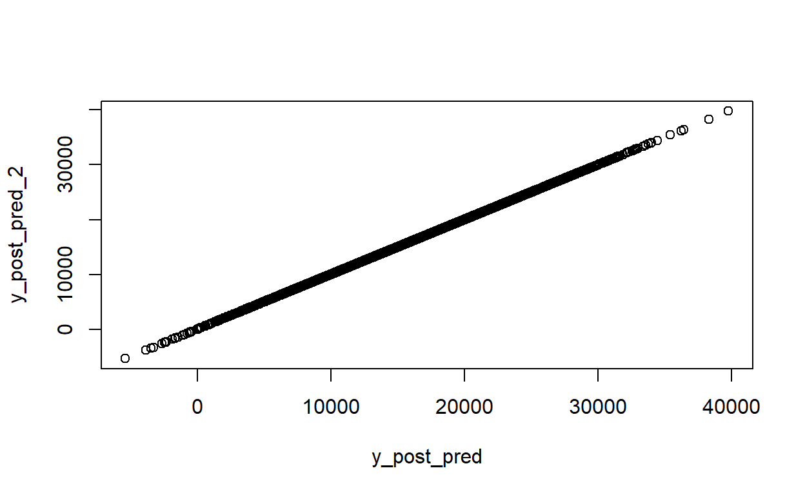
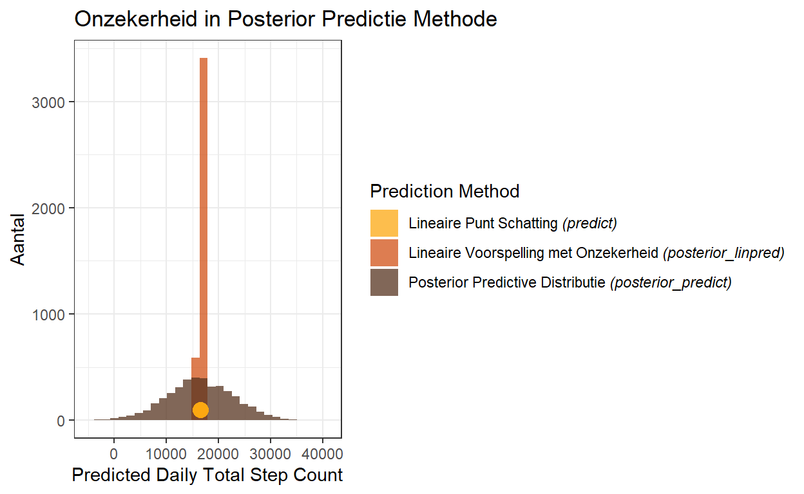

Dit is een blog naar aanleiding van Gelman/Hill/Vehtari nieuwe boek Regresion and other stories
Vijftien jaar geleden schreven Gelman en Hill Data analysis using regression and multilevel/hierarchical models, een klassieker over moderne data-analyse. Ze gebruikte R en WinBugs voor lineaire en logistische, hierarchische regressieanalyse en causale inferentie. Ze lieten zien hoe je dat op de frequentistische en Bayesiaanse manier kunt doen. Het boek werd voor mij een naslagwerk dat ik steeds maar weer uit de kast trok. Vorig jaar dacht ik, laat ik eens zien of Gelman al weer iets nieuws heeft geschreven en toen zag ik dat Regression and other stories hiernet uit was is. Dat heeft Andrew Gelman weer met Jennifer Hill geschreven maar nu ook met de Fin Aki Vehtari. Ik was er nog niet aan toe gekomen om het te lezen. Dat heb ik deze maand gedaan. Ook dit boek zal ik vaker uit de kast trekken. Dit boek gaat over allerlei aspecten van regressie. Het is een theoretisch én praktisch boek. Je leert, wat ze noemen, voorspellende modellen beter begrijpen, toepassen in verschillende praktische problemen en je leert het simuleren. Je leert het opbouwen vanaf de basis en daarna kun je het in verschillende situaties toepassen. Het wil kritisch zijn, zonder nihilistisch te worden en vooral laten zien dat je van statistische analyse kunt leren. Ook dit boek staat op twee benen: frequentisch en Bayesiaans en laat zien hoe informatie wordt gebruikt in het schattingsproces, de assumpties die eraan ten grondslag liggen en hoe schattingen en voorspellingen kunnen worden geïnterpreteerd in beide raamwerken. Beide kunnen worden gebruikt, maar het is ook duidelijk dat de voorkeur bij Bayesiaanse benadering ligt. Dan kun je ook andere informatie gebruiken om te schatten of te voorspellen. En omdat je simuleert (het model duizenden keren draait) kunt je met de Bayesiaanse techniek meer zeggen over onzekerheid. Dat maakt deze techniek zeer geschikt voor regressieanalyses zoals in dit boek gepresenteerd. Wat ik zelf van dit boek heb geleerd zijn de mogelijkheden om op basis van gegevens te voorspellen. Vooral hoofdstuk 9 (Voorspellen en Bayesiaanse inferentie) vond ik interessant. Maar het boek zit vol informatie en kennis en laat zich amper samenvatten. Het lijkt erop dat het een eerste deel is en ik verwacht dat er later nog een tweede deel komt dat de nadruk legt op multilevel analyse. We zullen zien Bij het boek zit ook nog een website met data en scripts om zelf uit te proberen, prachtig onderwijsmateriaal opgesteld door Aki Vehtari hier.
Toen ik het boek uit had kwam ik een een blog tegen op R-bloggers. Het verscheen op 1 september 2021 hier, maar ik kon niet zien van wie het is (Mister X, sorry. Hij of zij schreef het nadat deze persoon Regression and other stories had gelezen. Het vat heel goed samen hoe moderne regressieanalyse werkt en daarom heb ik het voor hier vertaald.
In deze post zullen we een eenvoudig voorbeeld van Bayesiaanse regressieanalyse doornemen met het rstanarm pakket in R. Ik heb Gelman, Hill en Vehtari’s recente boek Regression and Other Stories” gelezen, en deze blog post is mijn poging om enkele van de dingen die ik heb geleerd toe te passen. Ik heb de afgelopen jaren stukjes en beetjes van de Bayesiaanse benadering opgevangen, en ik vind het een heel interessante manier om over gegevensanalyse na te denken en ze uit te voeren. Ik heb met veel plezier het nieuwe boek van Gelman en collega’s doorgewerkt en geëxperimenteerd met deze technieken, en ik ben blij dat ik hier iets kan delen van wat ik heb geleerd.
Je kunt de gegevens en alle code van deze blogpost hier op Github vinden.
De gegevens die we in deze blog zullen onderzoeken bestaan uit de dagelijkse totale stappentellingen van verschillende fitnesstrackers die ik de afgelopen 6 jaar heb gehad. De eerste waarneming werd geregistreerd op 2015-03-04 en de laatste op 2021-03-15. Gedurende deze periode bevat de dataset de dagelijkse totale stappentellingen voor 2.181 dagen.
Naast de dagelijkse totale stappentelling bevat de dataset informatie over de dag van de week (bijv. maandag, dinsdag, etc.), het apparaat dat is gebruikt om de stappentelling vast te leggen (door de jaren heen heb ik er 3 gehad - Accupedo, Fitbit en Mi-Band), en het weer voor elke datum (de gemiddelde dagelijkse temperatuur in graden Celsius en de totale dagelijkse neerslag in millimeters, verkregen via het GSODR pakket in R).
De dataset (genaamd steps_weather) ziet er als volgt uit:
# A tibble: 6 x 7
date daily_total dow week_weekend device temp prcp
<date> <dbl> <chr> <chr> <chr> <dbl> <dbl>
1 2015-03-04 14136 Wed Weekday Accupedo 4.3 1.3
2 2015-03-05 11248 Thu Weekday Accupedo 4.7 0
3 2015-03-06 12803 Fri Weekday Accupedo 5.4 0
4 2015-03-07 15011 Sat Weekend Accupedo 7.9 0
5 2015-03-08 9222 Sun Weekend Accupedo 10.2 0
6 2015-03-09 21452 Mon Weekday Accupedo 8.8 0 Hieronder zie je de eerste en laatste data.
[1] "2015-03-04"[1] "2021-03-15"
Het doel van deze blogbijdrage is Bayesiaanse regressiemodellering te verkennen met behulp van het rstanarm pakket. Daarom zullen we de gegevens gebruiken om een zeer eenvoudig model te maken en ons te concentreren op het begrijpen van de modelfit en verschillende regressiediagnoses.
Ons model hier is een lineair regressiemodel dat de gemiddelde temperatuur in graden Celsius gebruikt om het totale dagelijkse aantal stappen te voorspellen. We gebruiken het stan_glm commando om de regressie-analyse uit te voeren. We kunnen het model uitvoeren en een samenvatting van de resultaten zien die de volgende tabel oplevert.
Het draait 4.000 iteraties en daarna worden de resultaten gepresenteerd.
SAMPLING FOR MODEL 'continuous' NOW (CHAIN 1).
Chain 1:
Chain 1: Gradient evaluation took 0 seconds
Chain 1: 1000 transitions using 10 leapfrog steps per transition would take 0 seconds.
Chain 1: Adjust your expectations accordingly!
Chain 1:
Chain 1:
Chain 1: Iteration: 1 / 2000 [ 0%] (Warmup)
Chain 1: Iteration: 200 / 2000 [ 10%] (Warmup)
Chain 1: Iteration: 400 / 2000 [ 20%] (Warmup)
Chain 1: Iteration: 600 / 2000 [ 30%] (Warmup)
Chain 1: Iteration: 800 / 2000 [ 40%] (Warmup)
Chain 1: Iteration: 1000 / 2000 [ 50%] (Warmup)
Chain 1: Iteration: 1001 / 2000 [ 50%] (Sampling)
Chain 1: Iteration: 1200 / 2000 [ 60%] (Sampling)
Chain 1: Iteration: 1400 / 2000 [ 70%] (Sampling)
Chain 1: Iteration: 1600 / 2000 [ 80%] (Sampling)
Chain 1: Iteration: 1800 / 2000 [ 90%] (Sampling)
Chain 1: Iteration: 2000 / 2000 [100%] (Sampling)
Chain 1:
Chain 1: Elapsed Time: 0.21 seconds (Warm-up)
Chain 1: 0.175 seconds (Sampling)
Chain 1: 0.385 seconds (Total)
Chain 1:
SAMPLING FOR MODEL 'continuous' NOW (CHAIN 2).
Chain 2:
Chain 2: Gradient evaluation took 0 seconds
Chain 2: 1000 transitions using 10 leapfrog steps per transition would take 0 seconds.
Chain 2: Adjust your expectations accordingly!
Chain 2:
Chain 2:
Chain 2: Iteration: 1 / 2000 [ 0%] (Warmup)
Chain 2: Iteration: 200 / 2000 [ 10%] (Warmup)
Chain 2: Iteration: 400 / 2000 [ 20%] (Warmup)
Chain 2: Iteration: 600 / 2000 [ 30%] (Warmup)
Chain 2: Iteration: 800 / 2000 [ 40%] (Warmup)
Chain 2: Iteration: 1000 / 2000 [ 50%] (Warmup)
Chain 2: Iteration: 1001 / 2000 [ 50%] (Sampling)
Chain 2: Iteration: 1200 / 2000 [ 60%] (Sampling)
Chain 2: Iteration: 1400 / 2000 [ 70%] (Sampling)
Chain 2: Iteration: 1600 / 2000 [ 80%] (Sampling)
Chain 2: Iteration: 1800 / 2000 [ 90%] (Sampling)
Chain 2: Iteration: 2000 / 2000 [100%] (Sampling)
Chain 2:
Chain 2: Elapsed Time: 0.498 seconds (Warm-up)
Chain 2: 0.17 seconds (Sampling)
Chain 2: 0.668 seconds (Total)
Chain 2:
SAMPLING FOR MODEL 'continuous' NOW (CHAIN 3).
Chain 3:
Chain 3: Gradient evaluation took 0 seconds
Chain 3: 1000 transitions using 10 leapfrog steps per transition would take 0 seconds.
Chain 3: Adjust your expectations accordingly!
Chain 3:
Chain 3:
Chain 3: Iteration: 1 / 2000 [ 0%] (Warmup)
Chain 3: Iteration: 200 / 2000 [ 10%] (Warmup)
Chain 3: Iteration: 400 / 2000 [ 20%] (Warmup)
Chain 3: Iteration: 600 / 2000 [ 30%] (Warmup)
Chain 3: Iteration: 800 / 2000 [ 40%] (Warmup)
Chain 3: Iteration: 1000 / 2000 [ 50%] (Warmup)
Chain 3: Iteration: 1001 / 2000 [ 50%] (Sampling)
Chain 3: Iteration: 1200 / 2000 [ 60%] (Sampling)
Chain 3: Iteration: 1400 / 2000 [ 70%] (Sampling)
Chain 3: Iteration: 1600 / 2000 [ 80%] (Sampling)
Chain 3: Iteration: 1800 / 2000 [ 90%] (Sampling)
Chain 3: Iteration: 2000 / 2000 [100%] (Sampling)
Chain 3:
Chain 3: Elapsed Time: 0.426 seconds (Warm-up)
Chain 3: 0.146 seconds (Sampling)
Chain 3: 0.572 seconds (Total)
Chain 3:
SAMPLING FOR MODEL 'continuous' NOW (CHAIN 4).
Chain 4:
Chain 4: Gradient evaluation took 0 seconds
Chain 4: 1000 transitions using 10 leapfrog steps per transition would take 0 seconds.
Chain 4: Adjust your expectations accordingly!
Chain 4:
Chain 4:
Chain 4: Iteration: 1 / 2000 [ 0%] (Warmup)
Chain 4: Iteration: 200 / 2000 [ 10%] (Warmup)
Chain 4: Iteration: 400 / 2000 [ 20%] (Warmup)
Chain 4: Iteration: 600 / 2000 [ 30%] (Warmup)
Chain 4: Iteration: 800 / 2000 [ 40%] (Warmup)
Chain 4: Iteration: 1000 / 2000 [ 50%] (Warmup)
Chain 4: Iteration: 1001 / 2000 [ 50%] (Sampling)
Chain 4: Iteration: 1200 / 2000 [ 60%] (Sampling)
Chain 4: Iteration: 1400 / 2000 [ 70%] (Sampling)
Chain 4: Iteration: 1600 / 2000 [ 80%] (Sampling)
Chain 4: Iteration: 1800 / 2000 [ 90%] (Sampling)
Chain 4: Iteration: 2000 / 2000 [100%] (Sampling)
Chain 4:
Chain 4: Elapsed Time: 0.271 seconds (Warm-up)
Chain 4: 0.145 seconds (Sampling)
Chain 4: 0.416 seconds (Total)
Chain 4:
Model Info:
function: stan_glm
family: gaussian [identity]
formula: daily_total ~ temp
algorithm: sampling
sample: 4000 (posterior sample size)
priors: see help('prior_summary')
observations: 2181
predictors: 2
Estimates:
mean sd 10% 50% 90%
(Intercept) 16214.4 276.7 15855.8 16220.4 16565.0
temp 26.8 21.7 -0.8 26.5 54.6
sigma 6198.5 96.3 6073.5 6194.9 6325.3
Fit Diagnostics:
mean sd 10% 50% 90%
mean_PPD 16517.8 184.2 16281.9 16517.8 16756.5
The mean_ppd is the sample average posterior predictive distribution of the outcome variable (for details see help('summary.stanreg')).
MCMC diagnostics
mcse Rhat n_eff
(Intercept) 4.4 1.0 4042
temp 0.3 1.0 3948
sigma 1.5 1.0 4023
mean_PPD 3.0 1.0 3896
log-posterior 0.0 1.0 1471
For each parameter, mcse is Monte Carlo standard error, n_eff is a crude measure of effective sample size, and Rhat is the potential scale reduction factor on split chains (at convergence Rhat=1).Deze tabel bevat de volgende variabelen:
De uitvoer in de samenvattende tabel hierboven lijkt vrij veel op de uitvoer van een standaard gewone kleinste kwadratenregressie. In de Bayesiaanse benadering van regressiemodellering krijgen we echter niet gewoon puntschattingen van coëfficiënten, maar eerder volledige verdelingen van simulaties die mogelijke waarden van de coëfficiënten vertegenwoordigen, gegeven het model. Met andere woorden, de getallen in de bovenstaande tabel zijn gewoon samenvattingen van verdelingen van coëfficiënten die de relatie tussen de voorspellers en de uitkomstvariabele beschrijven.
Standaard geven de rstanarm regressiemodellen 4.000 simulaties van de posterior verdeling voor elke modelparameter. We kunnen de simulaties uit het modelobject halen en ze als volgt bekijken:
En dat geeft 4000 posterior simulaties van de parameters intercept, temp en sd. Deze simulaties drukken de onzekerheid uit van de modeloutput die je hierboven vindt
parameters
iterations (Intercept) temp sigma
[1,] 16390.01 6.863927 6212.239
[2,] 16212.82 33.740601 6117.295
[3,] 16184.85 28.457402 6425.134
[4,] 16110.01 41.626205 6234.812
[5,] 16320.90 17.457927 6098.088
[6,] 16455.84 21.699611 6043.128De gemiddelde waarden van deze verdelingen van simulaties worden weergegeven in de hierboven afgebeelde tabel met regressiesamenvattingsuitvoer.
[1] 16214.44[1] 276.6901[1] 26.81344[1] 26.48466[1] 21.70327[1] 6198.463[1] 96.33321Het uitstekende bayesplot-pakket bevat een aantal handige functies om de posterior distributies van onze coëfficiënten te visualiseren. Laten we de mcmc_areas-functie gebruiken om de 90% geloofwaardige intervallen voor de modelcoëfficiënten weer te geven. die de volgende plot oplevert.

Deze grafiek is zeer interessant en toont ons de posterior distributie van de simulaties van het model dat we hierboven hebben getoond. De plot geeft ons een idee van de variatie van alle parameters, maar de coëfficiënten liggen op zulke verschillende schalen dat de details verloren gaan door ze allemaal samen weer te geven.
Laten we ons concentreren op de temperatuurcoëfficiënt en een gebiedsplot maken met alleen deze parameter:

Deze grafiek toont de mediaan van de verdeling (26,69, die zeer dicht bij ons gemiddelde van 26,83 ligt). We kunnen de grenzen van het hierboven getoonde gearceerde gebied bepalen met de posterior_interval functie, of rechtstreeks uit de simulaties zelf:
5% 95%
temp -8.750841 62.49293 5% 95%
-8.750841 62.492926 Beide methoden geven hetzelfde resultaat.
Een andere interessante manier om de verschillende coëfficiënten uit de posterior verdeling te visualiseren is door de regressielijnen van vele simulaties uit de posterior distributie gelijktijdig uit te zetten tegen de ruwe data. Deze visualisatietechniek wordt veel gebruikt in zowel Richard McElreath’s Statistical Rethinking als in Gelmans Regression and Other Stories. Beide boeken maken dit soort tekeningen met behulp van plotfuncties in basis-R. Ik was erg blij deze blog post te vinden met een voorbeeld van hoe je deze plots kan maken met behulp van ggplot2! Ik heb de code lichtjes aangepast om de onderstaande figuur te maken.
De eerste stap is het extraheren van de basisinformatie om elke regressielijn te tekenen. We doen dit met de volgende code, waarbij we in essentie ons model-object doorgeven aan een dataframe, en dan enkel het intercept en de temperatuur-hellingen voor elk van onze 4.000 simulaties uit de posterior distributie houden.
Dit geeft het volgende dataframe terug:
# A tibble: 6 x 2
intercept temp
<dbl> <dbl>
1 16390. 6.86
2 16213. 33.7
3 16185. 28.5
4 16110. 41.6
5 16321. 17.5
6 16456. 21.7 Dit dataframe heeft 4.000 rijen, één voor elke simulatie uit de posterior verdeling in onze originele sims matrix.
We stellen dan enkele “esthetische regelaars” in, die specificeren hoeveel lijnen van de posterior verdeling we willen plotten, hun transparantie (de alpha parameter), en de kleuren voor de individuele posterior lijnen en het algemene gemiddelde van de posterior schattingen. De ggplot2 code stelt dan de assen in met het originele data frame (steps_weather), plot een steekproef van regressielijnen uit de posterior verdeling in licht grijs, en plot dan de gemiddelde helling van alle posterior simulaties in blauw.
Dat levert de volgende plot op:

De gemiddelde helling (weergegeven in de grafiek en ook terug te vinden in de modelsamenvatting hierboven) van de temperatuur is 26,8. Maar het plotten van samples uit de posterior verdeling maakt duidelijk dat er nogal wat onzekerheid is over de grootte van deze relatie! Sommige van de hellingen uit de verdeling zijn negatief - zoals we zagen in onze berekening van de onzekerheidsintervallen hierboven. In essentie is er een “gemiddelde” coëfficiëntschatting, maar wat het Bayesiaanse raamwerk heel goed doet (via de posterior verdelingen) is extra informatie verschaffen over de onzekerheid van onze schattingen.
Een laatste manier om grafieken te gebruiken om ons model te begrijpen is door gebruik te maken van posterior predictive checks. Ik hou van deze intuïtieve manier om de logica achter deze reeks technieken uit te leggen: “Het idee achter posterior predictive checking is simpel: als een model een goede fit is, moeten we het kunnen gebruiken om gegevens te genereren die veel lijken op de gegevens die we hebben waargenomen. De gegenereerde gegevens worden de posterior predictive distributie genoemd, dat is de verdeling van de uitkomstvariabele (dagelijks totaal aantal stappen in ons geval) die wordt geïmpliceerd door een model (het regressiemodel dat hierboven is gedefinieerd). Het gemiddelde van deze verdeling wordt weergegeven in de bovenstaande uitvoer van het regressieoverzicht, met de naam mean_PPD.
Er zijn vele soorten visualisaties die men kan maken om posterieure voorspellende controles uit te voeren. Wij zullen één zo’n analyse uitvoeren (voor meer informatie over dit onderwerp), die het gemiddelde van onze uitkomstvariabele (dagelijks totaal aantal stappen) in onze oorspronkelijke dataset en de posterior predictive distributie van ons regressie model.
De code is rechttoe rechtaan.

We kunnen zien dat het gemiddelde van onze dagelijkse stappen variabele in de originele dataset in principe in het midden van de posterior voorspellende distributie valt. Volgens deze analyse “genereert ons regressiemodel gegevens die veel lijken op de gegevens die we hebben geobserveerd!”
Tenslotte zullen we het model gebruiken om voorspellingen te doen over het aantal stappen per dag, gebaseerd op een specifieke waarde van de gemiddelde dagtemperatuur. In Regression and Other Stories bespreken de auteurs in hoofdstuk 9 hoe een Bayesiaans regressiemodel kan worden gebruikt om voorspellingen te doen op een aantal verschillende manieren, waarbij telkens verschillende niveaus van onzekerheid in de voorspellingen worden opgenomen. Wij zullen elk van deze methoden achtereenvolgens toepassen.
Voor elk van de onderstaande methoden zullen we het gemiddelde aantal stappen per dag voorspellen wanneer de temperatuur 10 graden Celsius bedraagt. We kunnen een nieuw dataframe opzetten dat we zullen gebruiken om de modelvoorspellingen te verkrijgen:
De eerste benadering komt overeen met die welke we zouden gebruiken bij een klassieke regressieanalyse. We gebruiken gewoon de puntschattingen uit de modelsamenvatting, voegen de nieuwe temperatuur in waarvoor we een voorspelling willen, en produceren onze voorspelling in de vorm van een enkel getal. We kunnen dit doen met de predict functie in R, of door de coëfficiënten uit onze modelsamenvatting te vermenigvuldigen. Beide methoden leveren dezelfde voorspelling op:
Beide leveren een puntvoorspelling van 16483.71.
1
16482.57 temp
1 16482.57We kunnen echter genuanceerder zijn in onze voorspelling van het dagelijkse totale aantal stappen. Het hierboven berekende regressiemodel geeft 4.000 simulaties voor drie parameters - de intercept, de temperatuurcoëfficiënt, en sigma (de standaardafwijking van de residuen).
De volgende methode is geïmplementeerd in rstanarm met de posterior_linpred functie, en we kunnen deze gebruiken om de voorspellingen direct te berekenen. We kunnen hetzelfde resultaat ook “met de hand” berekenen met behulp van de matrix van simulaties uit de posterior verdeling van onze coëfficiëntschattingen. Bij deze aanpak wordt gewoon de temperatuur ingevoerd waarvoor wij voorspellingen willen (10 graden Celsius) en wordt voor elk van de simulaties het intercept opgeteld bij de temperatuurcoëfficiënt maal 10. Beide methoden leveren dezelfde vector van 4.000 voorspellingen op:
Dat geeft dezelfde resultaten.

Pearson's product-moment correlation
data: y_linpred and y_linpred_2
t = Inf, df = 3998, p-value < 2.2e-16
alternative hypothesis: true correlation is not equal to 0
95 percent confidence interval:
1 1
sample estimates:
cor
1 De laatste voorspellingsmethode voegt nog een extra laag van onzekerheid toe aan onze voorspellingen, door de posterior verdelingen voor sigma mee te nemen in de berekeningen. Deze methode is beschikbaar via de functie posterior_predict, en we gebruiken opnieuw onze matrix van 4.000 simulaties om een vector van 4.000 voorspellingen te berekenen.
De posterior predict methode volgt de aanpak van de posterior_linpred functie hierboven, maar voegt een extra foutterm toe gebaseerd op onze schattingen van sigma, de standaardafwijking van de residuen. De berekening zoals getoond in het “met de hand” gedeelte van de code hieronder maakt. Het maakt duidelijk waar de willekeurigheid in het spel komt, en vanwege deze willekeurigheid zullen de resultaten van de posterior_predict functie en de “met de hand” berekening niet overeenkomen tenzij we dezelfde seed instellen voordat we elke berekening uitvoeren. Beide methoden leveren een vector van 4.000 voorspellingen op.

Pearson's product-moment correlation
data: y_post_pred and y_post_pred_2
t = Inf, df = 3998, p-value < 2.2e-16
alternative hypothesis: true correlation is not equal to 0
95 percent confidence interval:
1 1
sample estimates:
cor
1 Laten we een visualisatie maken die de resultaten weergeeft van de voorspellingen die we hierboven deden. We kunnen een enkele cirkel gebruiken om de puntvoorspelling van de regressiecoëfficiënten weer te geven in de modelsamenvatting, en histogrammen om de posterior verdelingen weer te geven die geproduceerd zijn door de lineaire voorspelling met onzekerheid (posterior_linpred) en posterior predictive distribution (posterior_predict) methoden die hierboven beschreven zijn.
We zetten eerst de vectoren van posterior verdelingen die we hierboven hebben gemaakt in een dataframe. We maken ook een dataframe met de enkele puntvoorspelling van onze lineaire voorspelling. Vervolgens stellen we ons kleurenpalet in (afkomstig uit het NineteenEightyR pakket) en maken dan de plot:
Dat geeft de volgende plot:

Deze grafiek is zeer informatief en maakt duidelijk hoe groot de onzekerheid is die we voor elk van onze voorspellingsmethoden krijgen. Hoewel alle drie voorspellingsmethoden op dezelfde plaats op de x-as gecentreerd zijn, verschillen zij sterk wat betreft de onzekerheid rond de voorspellingsramingen.
De puntvoorspelling is een enkele waarde en bevat als zodanig geen onzekerheid. De lineaire voorspelling met onzekerheid, die rekening houdt met de posterior verdeling van onze interceptie- en temperatuurcoëfficiënten, heeft een zeer scherpe piek, waarbij de modelschattingen binnen een relatief klein bereik variëren. De posterior predictive distributie varieert veel meer, met het laagste bereik van de verdeling onder nul, en het hoogste bereik van de verdeling boven 40.000!
In dit artikel hebben we een eenvoudig model gemaakt met behulp van het rstanarm pakket in R, om te leren over Bayesiaanse regressie analyse. We gebruikten een dataset bestaande uit mijn geschiedenis van dagelijkse totale stappen, en bouwden een regressie model om het dagelijkse aantal stappen te voorspellen uit de dagelijkse gemiddelde temperatuur in graden Celsius. In tegenstelling tot de gewone kleinste kwadraten benadering die puntschattingen van modelcoëfficiënten oplevert, geeft de Bayesiaanse regressie posterior verdelingen van de coëfficiëntschattingen. Wij hebben een aantal verschillende samenvattingen en visualisaties van deze posterior verdelingen gemaakt om de coëfficiënten en de Bayesiaanse benadering in het algemeen te begrijpen - A) het gebruik van het bayesplot pakket om de posterior verdelingen van onze coëfficiënten te visualiseren
B) het plotten van 500 hellingen van de posterior verdeling, en
C) het uitvoeren van een controle van de posterior predictive distributie.